This quarter the UK OpenStreetMap community is mapping schools. So far over 250 people have made 10,000 edits – a hugely impressive feat! There’s still time to get involved and on Tuesday 1st March we are holding “Night School”, an online mapathon.
Night School is experiment for the UK Quarterly Project; on the evening of Tuesday 1st March let’s join together as one big community to map schools. There are no rules, simply start when you like and finish when you like and map where you like! Follow along with the progress on the school edit tracker and our live map of edits (to show up on the map simply add “#OSMschools” to the comment box when you save your map edit).
If you don’t know how to map schools in OpenStreetMap check out our handy picture tutorial. You can always contact us for more support should you need it.
Ideas for making the evening more fun are welcome! Don’t forget the discussions on Schools Quarterly Project that are taking place here on Loomio as a trial for a possible platform for UK member decision-making.
Even at this stage of the project new people are joining, so spread the word on other channels to see who we might attract.
In order to assist a conversation on Loomio about when to hold a “Night School” mapathon, I took a look at when mappers are most involved in the quarterly project to map schools. Data is based on Harry Wood’s School Edits website.
Starting with average number of mappers per day we see that Wednesday leads, whilst Friday and Saturday have the lowest number of mappers. Nothing unusual here then!
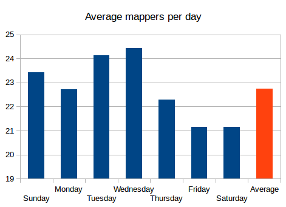
Although Monday has fewer mappers, in terms of total edits it is still up there with Tuesday and Wednesday.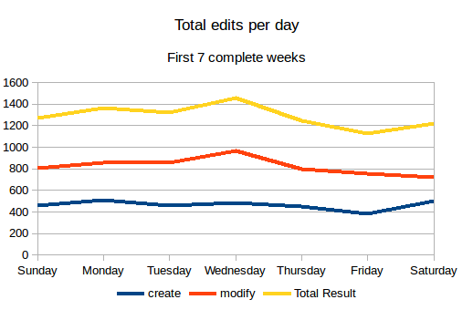
If we look at the time of day we find that 19:00 is the best hour for mappers.
During the first quarter of 2016, the UK OpenStreetMap community are helping each other to map schools. If you have never mapped anything in OpenStreetMap before then here is a really simple picture guide to get you started.
Step 1: Find a school to map
The first step is to find a missing school. Head over to the dedicated “OSM School Progress by Postcode Area” website and click on the map to pick a region. The blue circles on the map are schools from the official lists that haven’t been matched to anything already in OpenStreetMap – that is, they are missing from OpenStreetMap. Click on one and then click on the postcode in the pop-up.
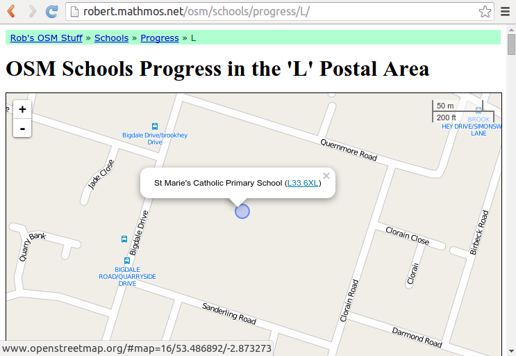Pick a school to map. The blue circles show missing schools.
Step 2: Open iD editor
When you click on the schools postcode it will take you to the same place in the map in OpenStreetMap. To start editing the map click “Edit with iD (in-browser editor)” as shown below. If you have not already signed in to OpenStreetMap go ahead and do so, or register as a new user.
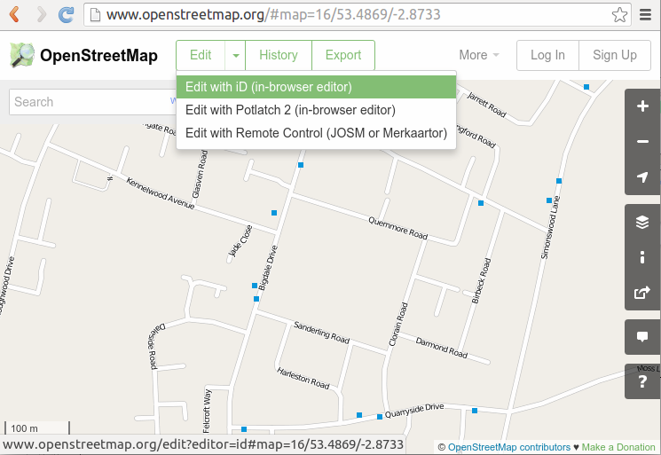Select “Edit in iD” to get open the map editor.
Step 3: Click “Area”
The first time the iD editor opens you will be offered a walkthrough tutorial to mapping. We highly recommend you follow this. If it doesn’t appear press H to bring up the help dialogue where you can start the walkthrough.
After the walkthrough zoom and move the map to the area of the school. The background imagery can be used to help you locate the school – they are usually easy to identify but if in doubt skip this school and pick another one.
Click on “Area”.
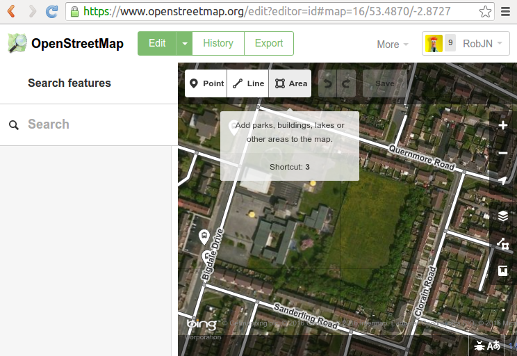Zoom in on the school and click “Area” to start adding an area around the school boundary.
Step 4: Draw around the school
The aim here is to draw around the school boundary including any playing fields and surrounding grounds. Start by clicking in one corner of the school grounds and then continue around the school grounds clicking in each corner to form an area. Tip: If you click and hold the mouse button down you can drag the map.
When you get to the last corner, click it again to finish the area.
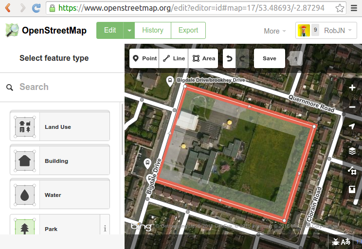Draw around the school grounds, clicking the last point twice to finish tracing the area.
Step 5: Mark the area as a School Grounds
With the area traced we now need to tell the iD editor that this is a school grounds. Under “select feature type” click in the search box and type “school”. Click on the School Grounds option in the list below.
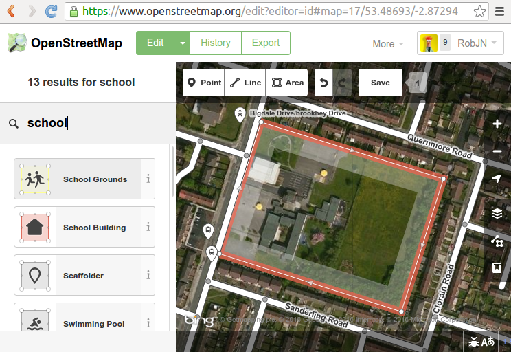Select “School Grounds” as the feature type.
Step 6: Add the school name
In the school grounds detail box add the schools name and any other info you may have, for example the address.
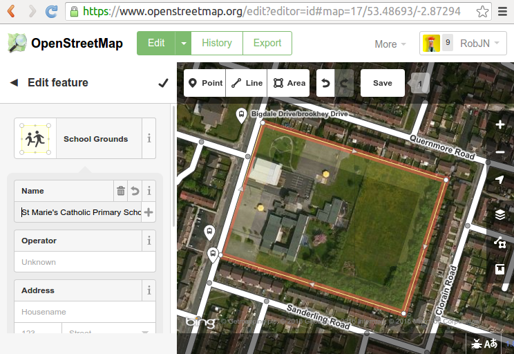Add the school name.
Step 7: Save with a comment
Finally select “Save”. Add a comment in the dialogue box and press Save. Here I have type “Added St Marie’s Catholic Primary School #OSMSchools”. The #OSMSchools enables us to see how many people are contributing to the quarterly project to map schools.
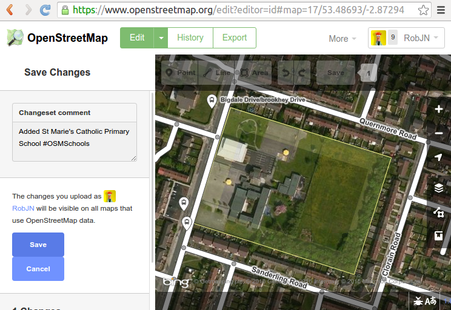Save your edit with a comment.
Congratulations! You have added a school to OpenStreetMap. How easy was that!
Optional extras: Add more details
You may want to add more detail to the map such as the school buildings, playing fields, and so on. Here I have followed a very similar set of steps as above to add the school buildings and a service road.
If you get stuck and need any help feel free to contact us. We’re happy to help out!
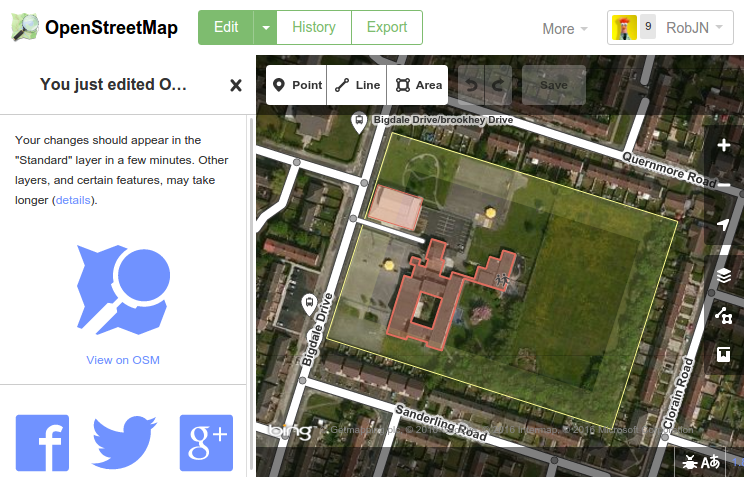Optionally add more detail following similar steps as above.
It’s been a month since we started our fifth quarterly project, so let’s look at where the engaged OpenStreetMap contributors are editing. Read on to find out where the mapping hot-spots are and where we have missing map locations.
Each quarter year we pick a different task to work on. The fifth is all about schools and has (by a long way) been our most successful. Let’s therefore use it to get an idea of where the engaged OpenStreetMap community is. By “engaged” I mean, where are the UK OpenStreetMappers who follow the community channels – such as the talk-gb mailing list and twitter accounts like ours – and join in with group mapping efforts.
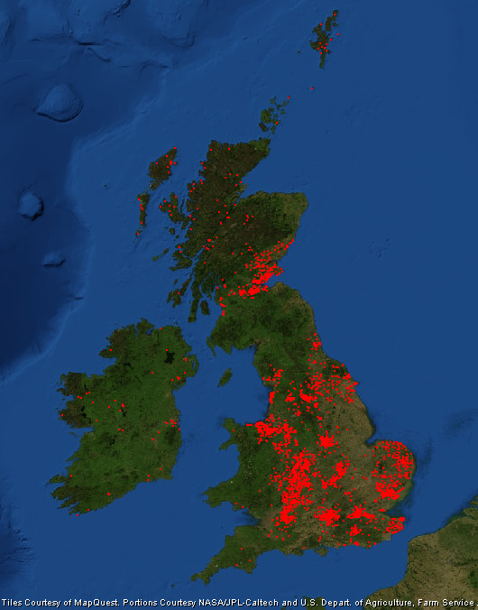Map of the OpenStreetMap community engaged in the quarterly project to map schools.
As you’d expect most edits are focused on large towns and cities. Here we have a larger population from which to attract engaged mappers, and of course there are more schools to map without having to travel so far. Large cities don’t always equate to lots of mappers though. Manchester and Liverpool are lagging behind; a trait we also saw during our first quarterly project (note: edits in the OL postcode region are my remote edits).
The cities that are most engaged also tend to be those with OpenStreetMap communities that meet regularly.
Perhaps big urban areas seem to daunting to an individual mapper! What we see is that the cities and larger towns that are most engaged also tend to be those with OpenStreetMap communities that meet in person regularly. These include Birmingham (this group), London, Nottingham and the central belt of Scotland. Perhaps the active mappers in Blackpool and Bradford could see if there is any interest in setting up a local community focused along the Mersey!
Other areas that are doing well are Cheshire, East Anglia, the South East and along the River Severn. Within the more rural areas Yorkshire is doing well (mapping is across the county not just in the larger urban areas) and as previously noted the Outer Hebrides and Shetland Islands.
Cardiff is another example of a city that is missing mappers. As are most of Wales and the South West, much of which is rural. They are joined by the region sandwiched between the Lake District and Edinburgh.
Finally, Ireland’s mappers are focused on mapping Townlands, but nevertheless they’ve found time to map a few schools in both Northern Ireland and the Republic of Ireland.
Progress on our fifth OpenStreetMap quarterly project – schools – continues to delight. Today we congratulate the HS (Outer Hebrides) and ZE (Shetland Islands) postcodes for becoming the first to reach 100% completeness!
Not even a month in to the latest UK Quarterly Projects and there has already been so much to celebrate. Here are the highlights from the third update on our project to map Schools.
1. HS and ZE are 100% complete!
Yes you read it right! Mapping of schools in the HS (Outer Hebrides) and ZE (Shetland Islands) postcodes are complete thanks to the efforts of OpenStreetMapper seumas. This means that all schools are mapped as a land area at minimum. We continue to add detail (e.g. buildings, sports pitches and paths) to further improve the mapping of the schools. Many other postcodes (most with more schools within them 😉 ) are close to 100% complete now too. Follow the progress here.
Sir E Scott School on Tarbert in the Outer Hebrides. Image courtesy of Urban Realm.
2. Open Data Manchester
Following a tweet Open Data Manchester have asked whether anyone can go and show them how to map. Looks like their next meeting is Monday February 1st, 6.30 – 8.30pm. Any volunteers?
3. 175 people have done 5351 edits
Amazing numbers measured by Harry’s tracker. Looks like Uganda has joined the project too. It would be great if someone could turn the CSV linked data at the bottom of the tracker into a daily chart. Drop us a comment below if you are able to help.
4. Nodes converted to ways
Following lot’s of data clean up we are nearing 80% of schools mapped as land areas rather than simple points. We should hit this in the next couple of days.
5. Northern Ireland still needs some work
If you map in Northern Ireland and want to get involved please do. Each extra school mapped there will help lift it off the bottom of the tracker. We can also look at doing some initiatives in NI if the local community want this. Let us know 🙂
Interested in mapping schools in your area? To join us see here. Never mapped before? No worries, contact us for a helping hand.
January 1st marked the beginning of our fifth OpenStreetMap quarterly project – schools. After 18 days we return back to square one. So what’s been going on?
The UK Quarterly Projects are intended as a bit of fun designed to inspire a few edits to OpenStreetMap in peoples spare time. Hopefully they also help with the sense of community and attract a few new people to OpenStreetMap. Our fifth project is all about schools.
One of the methods we use to track progress is a daily count of the total number of schools mapped in OpenStreetMap. This is based on the data reported by TagInfo and the data is collected daily thanks to a script written by Adam Hoyle.
UK schools mapped in OpenStreetMap – back to square one?
Normally we would expect to see the graph trend upwards, but with the schools project we started with an initial dip, having only just returned to square one. Why?
Well all is not bad. The chart above hides a lot of progress that has been made. Thanks to early work by Frederik and a uMap produced by Jerry, there has been a big focus on improving the mapping of existing schools. In many cases this meant converting a simple node (point marking the centre of the school) to a way (polygon) demarking the boundary of the school. The chart unfortunately misses these! There were also many cases where a school had been marked with both a node and a way. This is considered bad practice and the drop in the chart reflects how people have been cleaning this up.
We see that a hugely impressive 137 people have been helping to map schools in OpenStreetMap, editing a total of 3,300 schools!
So what progress has been made? To answer this we can refer to a number of new progress trackers. Firstly Harry Wood‘s school edit tracker. This counts the number of UK school edits that have been made. We see that a hugely impressive 137 people have been helping to map schools in OpenStreetMap, editing a total of 3,300 schools! For fun Harry’s tool also provides a leader board – congratulations to Robert W, Paul (southglos) and Mark S for taking 1st, 2nd and 3rd respectively.
We can also track progress by postcode region thanks to Robert W’s comparison tool. In my previous post we looked at how the KY postcode area was leading the way. Overall we have now increased the number of schools mapped in OpenStreetMap from 62% to 68% (excludes Northern Ireland data as this was added later). If we continue at this rate we will reach a massive 90% by the end of the quarter. I think we can get closer to 100% as the pace will pick up now that the initial clean up of existing data is coming to an end. 🙂
Up for the challenge? To join us in adding schools to OpenStreetMap see here. Never mapped before? No worries, contact us for a helping hand.
Happy New Year! (and Happy New Mapping Year!) The first Quarterly Project for 2016 is now under way and is Schools. There are really two strands to this project.
The first is to remotely (armchai)r map and get an increase in coverage of the number of schools
The latest government data is for January 2012 which shows 24,372 schools in England (including nursery schools, state-funded primary schools, state-funded secondary schools, special schools, pupil referral units and independent schools.)
For Wales that data is from January 2015 : 13 Nursery Schools; 1,330 primary schools;6 middle schools;207 secondary schools;and 37 special schools.
For Scotland data is from September2011 and shows 2,553 pre-schools, 2,081 primary schools, 367 secondary schools and 158 special schools.
For Northern Ireland data is from October 2015 and shows 96 nursery schools; 827 primary schools; 202 secondary schools and 39 special schools. Additionally there are 14 independent schools and 1 hospital school.
That gives a total of 32,318 schools. Taginfo shows 27,191 schools which is 84.1% coverage in OSM. However 6,348 are represented as nodes only. It would be great to have these as polygons and associated buildings. It would also be great to have close to 100% coverage.
This data comes from a cursory web search. If anyone has better or newer data, it’s welcome.
Schools can be remotely mapped (armchair mapping) by using Ordnance Survey OpenData StreetView(OSSV) data where school buildings are individually identified (but not always named). This data needs to be cross-checked with Bing aerial imagery which can often show OSSV schools as either having been demolished with a resultant brownfield site or housing redevelopment, or with buildings having been demolished and rebuilt in a new configuration. Often where a school site has ceased to exist, a completely new school site has been constructed nearby.
The second strand is for those who prefer surveying: existing school names change (e.g change to Academy Status, amalgamations); there will schools in OSM with no name, and with the advent of free schools, new ones will be appearing constantly.
So there’s plenty to do over the next few months!
There’s a progress table already established. You’ll need to access the sheet marked Schools.
Last weekend I attended the OSM London hack weekend. The theme of the event was mobile, a key area where OpenStreetMap can grow it’s current offering. Timing couldn’t have been any better – just 2 days earlier the press was reporting that smartphone use surpassed the use of laptops in the UK.
Our hosts for the weekend were Geovation Hub which is part of the Ordnance Survey but feels very different. It felt much more like a swanky up-start focussed on innovation and not tied down with years of history and layers of bureaucracy. Geovation describe themselves as a “co-working space for individuals, businesses and aspiring entrepreneurs to collaborate, exchange ideas and innovate around ventures that are underpinned by geospatial data“.
First day of the OpenStreetMap hack weekend at Geovation Hub, London.
The weekend was well attended with 25 developers working to make OpenStreetMap better on mobile. Many of the names will be recognisable to avid OpenStreetMappers and it was great to catch up with those who I hadn’t seen since State of the Map 2013 in Birmingham.
We were kept supplied with tea and coffee at the Geovation Hub, whilst PIE Mapping provided pizza to keep the energy levels up. This helped to keep us going – some of the things we worked on (not an exhaustive list and sorry if I have missed your particular project off):
Jochen Topf & Harry Wood worked on integrating TagInfo into the OpenStreetMap Wiki. by building a solution to auto-populate the wiki with data from TagInfo based on a Taglists template.
Harry then continued to work on TweetFellows – an Open Source tool that will enable multiple people to send tweets from the @OpenStreetMap twitter account.
TagInfo also saw some improvements to the way it is displayed on mobile devices thanks to Christopher Baines, whilst Marc T made the nominatim web page better on small screens (not live yet).
Sarah Hoffmann was also working on nominatim and implemented lots of bug fixes before starting work on a new feature that provides additional information such as opening hours and accessibility with each nominatim search.
Jo Walsh (aka zool) built the first stage of a building details editor for Android. It currently downloads the data around you based on your GPS location, with editing functionality the next stage of development.
The OpenStreetMap editor Vespucci also saw some development as Mick Orridge added the ability to view GPS traces as a new layer.
Nick Whitelegg added support for GeoJSON to MapsForge. This will help to ensure that the data can be easily kept up to date and could replace the current MAP files that tend to only get updated once a year.
Serge W started work on a really novel app idea – a wifi scanner that looks for wifi networks associated with well known stores (e.g. McDonalds) and then asks whether a node should be added to OpenStreetMap.
Finally, Robert Scott was working on porting OS Musical Chairs to the new OS OpenNames data – perfect given our location.
For more see also the GeoVation blog post. I’m already looking forward to seeing what the next event can do!
Earlier this year at State of the Map US, Dale Kunce from the American Red Cross presented OpenMapKit. Traditional field data collection tools for OpenStreetMap have either relied on paper or are too complicated, or lack an understanding of traditional survey techniques. OpenMapKit is designed to collect detailed survey data on mobile devices. It’s structured questions helps you to create rich data (if it’s a restaurant then what type of food, what are the opening hours, is it disabled accessible?) on the move.
Although Dale’s presentation (embedded below) is still way too complicated for me to fully understand, I am looking forward to testing OpenMapKit when it becomes available on the android Play store.
If you are interested in mobile tools for OpenStreetMap, either as a developer or as a mapper, then come along to the London development event, on the weekend of 8-9 August 2015.
From time to time we talk about the potential of setting up a “UK/GB
OpenStreetMap group” (name yet to be decided) but we never quite know what
it should look like.
Survey time!! Please fill in the following 2 minute survey:
Your responses to page 1 will be shared when we close the survey (in a few
weeks). If you respond to the optional page 2 questions (your details),
your responses will be used for the purpose of administrating the group
only (they will only be seen by myself and any designated administrator
should a UK/GB group be set up).


{kind=link}